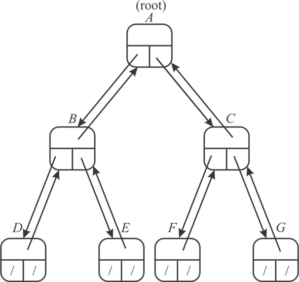
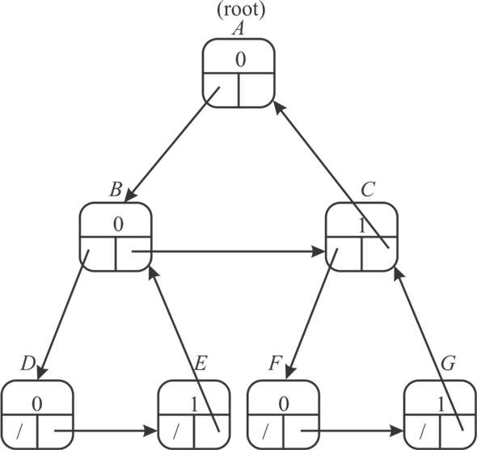

Non recursive procedure for n-node binary tree using stack as an auxiliary data structure:
PRT-WITH-STACK (T)
// if statement is used to check tree is empty or not
1 if T== Nil
// display the message
2 print(“Stack is empty”)
3 Return
// else statement is executed when if statement is wrong
4 else
//add the node of tree into stack
5 Stack.Push(T)
// increment the value of top by 1 in stack
6 Stack. Top= Stack.top+1
//while statement is used to check the element in stack
7 While Stack != empty
//fetch the element from stack
8 Crnt-node = Stack.Pop
//decrease the value of top by 1 in stack
9 Stack.top= Stack. top-1
//display the all node value
10 Print (Crnt-node.value)
//if statement is used to check the left child of current node
11 if Crnt-node.left != NIL
//insert the left node into stack
12 Stack.Push (Crnt-node.left)
//else if statement is used to check the right child of current node
13 else if Crnt-node.right != NIL
// insert the right node into stack
14 Stack.Push (Crnt-node.right)
Explanation of Algorithm:
• In the above algorithm stack is used to store all nodes of tree and to display the key of each node.
• All ancestors of any particular node are stored into stack. Once user reach the key, display all value of stack.
• In the above algorithm, first check the tree is empty or not.
• If tree is not empty, push all the element of tree into stack.
• While statement is used to check the element in stack, retrieve all nodes from stack and store it into current node variable.
• Check the left child of tree, and insert it into stack.
• Similarly, check the right child of tree and insert it into stack.
Binary Tree
Binary tree is a tree type data structure where each has at most two child nodes, classified as “left” and “right”. The nodes which have children are called as parent nodes, and child nodes can have references to the parents’ node. If the ancestor of all nodes that is root node exists then it is often referenced outside the tree.
In the data structure, a node can be reached by starting at root node and repeatedly following references to either the left or right child. A tree which does not have any node except the ancestor of all nodes is classified as a null tree. In a binary tree every node can have a maximum degree of two. A tree which has n nodes can have n-1 degree or branches exactly.
Here in the given n-node binary tree, we have to print out the each node keys, for this purpose we have current pointer and last pointer, it recognize the current and last visited node respectively. The traversing is done in the algorithm in preorder that is (parent, left, right). Then according to the relationship between the last and the current node, whether current node is the right or the left child, we update the respective pointer.Here in the following algorithm, two variables are used:
l_p - last pointer.
c_p - current pointer.
//variable assignment
l_p = null;
c_p = root;
// check that the current pointer is null or not
while (c_p !=null)
{
// checking that pointer of parent node of current pointer is same as last pointer
if (l_p == c_p. parent)
{
// printing the data of current pointer
print (c_p. data);
// left traversing
if (c_p .left!=null)
{
// last pointer is equal to current pointer
l_p=c_p;
}
// right traversing
else if (c_p. right!=null)
{
// last pointer is equal to current pointer
l_p=c_p;
c_p=c_p .right;
}
else
{
// last pointer is equal to current pointer
l_p=c_p;
// parent node of current pointer become the current pointer
c_p=c_p .parent;
}
}
// now considering the left tree of current pointer node
else if (l_p == c_p .left)
{
if (c_p .right !=null)
{
// last pointer is equal to current pointer
l_p=c_p;
c_p=c_p .right;
}
else
{
// last pointer is equal to current pointer
l_p=c_p;
// parent node of current pointer become the current pointer
c_p=c_p. parent;
}
}
// now considering the right tree of current pointer node
else if (l_p == c_p. right)
{
// last pointer is equal to current pointer
l_p=c_p;
// parent node of current pointer become the current pointer
c_p=c_p. parent;
}
}
Here we consider the logic that from a given node A, we move down the left sub-tree of the node A (apply the same logic at each node that is reached in the sub-tree), then come back to node A and do the same procedure in the right sub-tree (apply the same logic at each node that is reached in the sub-tree), and then again come back to this node and transfer control to the parent of the current node A.
Complexity:
? The number of iterations which are performed on a tree to traverse down the left sub-tree.
? The number of iterations which are performed on a tree to traverse back up to the node.
Both points above have the same number of iterations. Hence it would be bound by a factor of, overall. So, the complexity is the order of (n).
Consider the following tree in which A is the root of the tree. Each node in following tree has three pointers, left, right and parent. All these three pointers point to the left, right and parent of any particular node.

Explanation:
• In above tree, A is the root of the tree. The root node A has 2 children nodes B and C which are pointed by the left and right pointer of the A node.
• The node B again has 2 children nodes, D and E which are pointed by the left and right pointer of the node B. The parent pointer of the B node points its parent node that is A.
• Similarly, node C again has 2 children nodes, F and G which are pointed by the left and right pointer of the node C. The parent pointer of the C node points its parent node that is A.
• The node D, E, F and G are the leaves node therefore there left and right pointer points to the NIL which is represented by the slash. The parent pointer of all these node points to their respective parents.
Modification required for implementing a tree with 2 pointers and 1 Boolean value:
• The left pointer of each node points to its left child whereas right pointer points to its right sibling.
• The right pointer of the right most child point to its parent and also set 1 as the Boolean value of the right most children to know that it is the right most children.
• A loop is made between children and parent, so that a parent of any children can be determined in a liner time.
Consider the following tree in which A is the root of the tree. Each node in following tree has two pointers, left and right, and one Boolean value.

Explanation:
• In above tree, A is the root of the tree. The left pointer of the root node points to its left child that is B.
• The left pointer of B node points to its left child D. The right pointer of B node pointes to its sibling C. Set 0 as Boolean values of node C because it is not the right most child of its parent.
• The left pointer of D node points to NIL whereas the right pointer pointes to its sibling E. Set 0 as Boolean values of node D because it is not the right most child of its parent.
• The left pointer of E node points to NIL whereas the right pointer points to its sibling parents B because it is the right most child. Set 1 as Boolean values of node E because it is the right most child of its parent B.
• Similarly, pointers point its sibling and parents in node C, F and G.